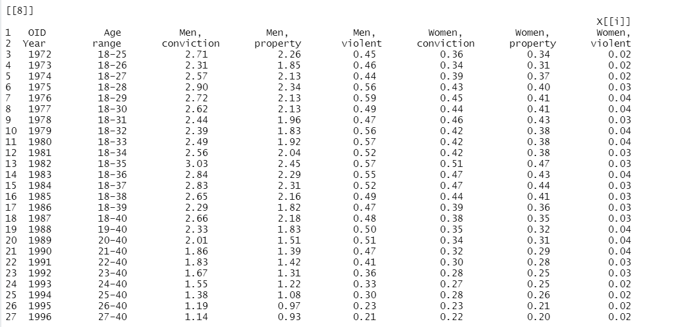

The pdftableExtractor package provides functions for extracting tables from PDF files. Using the pdftools package developed by rOpenSci, tables can be easily extracted from pdf files in R environment without the need for additional setup.
Installation
The development version of pdftableExtractor can be downloaded using devtools:
install.packages("devtools")
devtools::install_github('Mubarak-M/pdftableExtractor')Usage
pdftableExtractor provides functions to extract tables from single and double column PDF files. It has additional functionality which allows users to extract tables from specific page(s) in pdf files. The exctractor_tables function is used for extracting all tables in pdf file while the pages_tables helper function enable users to extract table(s) from a specific page(s) in the pdf file.
Guide
extractor_tables
This is a basic example which shows you how to extract tables from a pdf document using extractor_tables function:
library(pdftableExtractor)
file <- system.file("extdata", "onecoldata.pdf", package = "pdftableExtractor")
table1 <- extractor_tables(file, path = TRUE)All tables in onecoldata.pdf are stored as a list containing 11 data frames in table1. Example of one of the data frames is presented below:

pages_tables from single column document
This is a basic example which shows you how to extract tables from a specific page(s) in a single column pdf document using pages_tables function, the onecol argument must be set to TRUE:
library(pdftableExtractor)
file <- system.file("extdata", "onecoldata.pdf", package = "pdftableExtractor")
table2 <- pages_tables(file,pages = 19, path = TRUE, onecol=TRUE)
table2
[[1]]
[[1]][[1]]
X[[i]]
1 GHS Age Men, no Men, Women, no Women,
2 Year range qualifications age left school qualifications age left school
3 1972 18–26 0.44 15.85 0.50 15.69
4 1973 18–27 0.36 15.76 0.46 15.69
5 1974 18–28 0.36 15.76 0.44 15.73
6 1975 18–29 0.35 15.76 0.45 15.72
7 1976 18–30 0.34 15.83 0.43 15.76
8 1977 18–31 0.32 16.00 0.40 15.87
9 1978 18–32 0.30 16.03 0.40 15.95
10 1979 18–33 0.32 16.01 0.37 15.97
11 1980 18–34 0.29 16.08 0.37 16.01
12 1981 18–35 0.30 16.07 0.37 16.02
13 1982 18–36 0.29 16.10 0.33 16.04
14 1983 18–37 0.28 16.10 0.33 16.02
15 1984 18–38 0.28 16.06 0.34 16.01
16 1985 18–39 0.28 16.10 0.32 16.03
17 1986 18–40 0.26 16.06 0.32 16.02
18 1987 18–40 0.25 16.12 0.29 16.07
19 1988 18–40 0.21 16.27 0.23 16.22
20 1989 18–40 0.20 16.28 0.23 16.24
21 1990 19–40 0.20 16.28 0.24 16.25
22 1991 20–40 0.20 16.31 0.21 16.26
23 1992 21–40 0.17 16.34 0.18 16.31
24 1993 22–40 0.16 16.41 0.18 16.36
25 1994 23–40 0.14 16.40 0.18 16.37
26 1995 24–40 0.16 16.37 0.17 16.37
27 1996 25–40 0.15 16.38 0.17 16.36
pages_tables with double column pdf file
This is a basic example which shows you how to extract tables from a specific page(s) of a double column pdf documents using pages_tables2 function:
library(pdftableExtractor)
file <- system.file("extdata", "twocoldata.pdf", package = "pdftableExtractor")
table5 <- pages_tables(file,pages = 3, path = TRUE)
table5
[[1]]
[[1]][[1]]
X[[i]]
1 Group 1(n = 47) Group 2(n = 46) Group 3(n = 14)
2 Age (years) 32.04 ± 6.283 31.15 ± 5.597 34.14 ± 4.865 0.206
3 Previous cesarean section (n) 1.17 ± 0.380 1.17 ± 0.383 1.57 ± 0.514 0.004
4 Gravidity (n) 4.13 ± 1.24 4.20 ± 1.470 5.0 ± 1.519 0.186
5 Parity (n) 1.21 ± 0.414 1.22 ± 0.513 1.50 ± 0.519 0.08
6 Gestational age at diagnosis (days) 52.68 ± 11.66 48.76 ± 8.945 52.15 ± 13.619 0.292
7 Fetal heart beat positive, n (%) 15(31.9%) 21(45.7%) 5(35.7%) 0.466
[[1]][[2]]
X[[i]]
1 Group 1(n = 47) Group 2(n = 46) Group 3(n = 14)
2 A:Before MTX treatment – 44,603.28 ± 38,615.27 25,648.86 ± 16,125.92 0.080
3 B:After MTX treatment or before curettage 31,163.48 ± 28,626.86 37,712.91 ± 23,880.85 31,005.21 ± 23,029.37 0.196
4 C:Three days after curettage 2838.68 ± 3.10 4434.98 ± 4.90 3263.46 ± 2.93 0.077
5 B-A – 9664.21 ± 8993.10 22,506.29 ± 36,916.63 0.219
6 (B-A)/A – 0.27 ± 0.213 1.33 ± 3.451 0.273
7 C/B 0.085 ± 0.04 0.084 ± 0.05 0.79 ± 0.04 0.674Rectangular data
Extracting a rectangular data that is ready for analysis in R can reduce data processing time. The rec argument is capable of extracting clean data.frame from pdf files. For this argument to work, users must be sure that the table meets the requirement of a rectangular data. That is, all rows and all columns must be of equal length.
library(pdftableExtractor)
file <- system.file("extdata", "onecoldata.pdf", package = "pdftableExtractor")
table3 <- pages_tables(file, pages = 18, path = TRUE, rec = TRUE, onecol = TRUE)
table3
[[1]]
[[1]][[1]]
OID Age Men. Men..1 Men..2 Women. Women..1 Women..2
1 Year range conviction property violent conviction property violent
2 1972 18–25 2.71 2.26 0.45 0.36 0.34 0.02
3 1973 18–26 2.31 1.85 0.46 0.34 0.31 0.02
4 1974 18–27 2.57 2.13 0.44 0.39 0.37 0.02
5 1975 18–28 2.90 2.34 0.56 0.43 0.40 0.03
6 1976 18–29 2.72 2.13 0.59 0.45 0.41 0.04
7 1977 18–30 2.62 2.13 0.49 0.44 0.41 0.04
8 1978 18–31 2.44 1.96 0.47 0.46 0.43 0.03
9 1979 18–32 2.39 1.83 0.56 0.42 0.38 0.04
10 1980 18–33 2.49 1.92 0.57 0.42 0.38 0.04
11 1981 18–34 2.56 2.04 0.52 0.42 0.38 0.03
12 1982 18–35 3.03 2.45 0.57 0.51 0.47 0.03
13 1983 18–36 2.84 2.29 0.55 0.47 0.43 0.04
14 1984 18–37 2.83 2.31 0.52 0.47 0.44 0.03
15 1985 18–38 2.65 2.16 0.49 0.44 0.41 0.03
16 1986 18–39 2.29 1.82 0.47 0.39 0.36 0.03
17 1987 18–40 2.66 2.18 0.48 0.38 0.35 0.03
18 1988 19–40 2.33 1.83 0.50 0.35 0.32 0.04
19 1989 20–40 2.01 1.51 0.51 0.34 0.31 0.04
20 1990 21–40 1.86 1.39 0.47 0.32 0.29 0.04
21 1991 22–40 1.83 1.42 0.41 0.30 0.28 0.03
22 1992 23–40 1.67 1.31 0.36 0.28 0.25 0.03
23 1993 24–40 1.55 1.22 0.33 0.27 0.25 0.02
24 1994 25–40 1.38 1.08 0.30 0.28 0.26 0.02
25 1995 26–40 1.19 0.97 0.23 0.23 0.21 0.02
26 1996 27–40 1.14 0.93 0.21 0.22 0.20 0.02Additional guide for extracting rectangular data from pdf
extractor_tables
This is a basic example which shows you how to extract tables pdf document with rectangular data using extractor_tables function and the rec argument:
library(pdftableExtractor)
file <- system.file("extdata", "recdata.pdf", package = "pdftableExtractor")
table <- extractor_tables(file, path = TRUE, rec = TRUE)
Limitations
Over selection
Given the dynamic format of tables and the complexity of pdf documents, the table extraction algorithms can over select text as table in some circumstances. However, these texts can be drop through additional processing of the output data.
Specifically, when working with double column pdf files where table does not cut across both columns, texts on the other column are greedily extracted as being part of the table.
Table inserted as image
Table inserted as image in pdf document cannot be extracted, the package uses the pdftools package and is currently only capable of reading text.